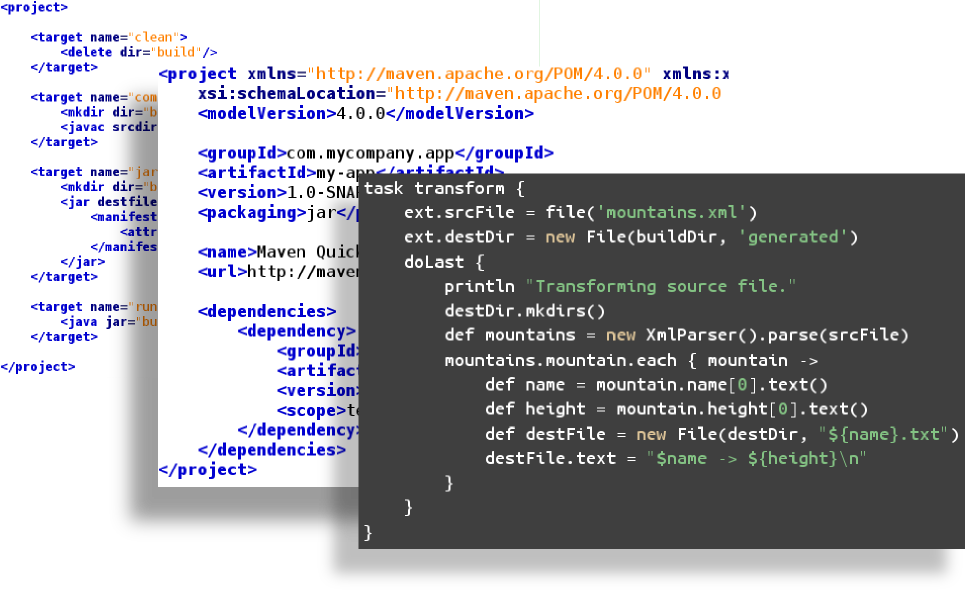

Uvod u jezike specifične za domen
Prof. dr Igor Dejanović (igord at uns ac rs)
Kreirano: 2019-03-19 Tue 20:09
Jezici specifični za domen
Jezici specifični za domen - JSD (Domain-Specific Languages - DSL)
- Jezici specifični za domen (JSD, eng. Domain-Specific Languages - DSL) su jezici prilagođeni i ograničeni na određeni domen problema.
- Za razliku od jezika opšte namene (JON, eng. General Purpose Language - GPL), nude povećanje ekspresivnosti kroz upotrebu koncepata i notacija prilagođenih domenu problema i domenskim ekspertima.
- Nazivaju se još i mali jezici (eng. little languages).
- Uspešan JSD je fokusiran na uzak, dobro definisan domen i pokriva ga na odgovarajući način.
- Domen često ima svoj jezik korišćen od strane domenskih eksperata iako ne postoji njegova implementacija na računaru.
Primeri JSD
SQL
SELECT player, stadium
FROM game JOIN goal ON (id=matchid)
JPA mapiranje
@Entity
@Table(name="COURSES")
public class Course {
private long courseId;
private String courseName;
public Course() {
}
public Course(String courseName) {
this.courseName = courseName;
}
@Id
@GeneratedValue
@Column(name="COURSE_ID")
public long getCourseId() {
return this.courseId;
}
}
Build jezici (Ant/Maven/Gradle)

Poslovni procesi - BPMN

Mobilne aplikacije

Ali i…
ili…

Prednosti upotrebe
Uticaj na produktivnost
- Pojedine studije pokazuju da povećanje produktivnosti ide i do 1000%1.
- Šta je osnovni razlog za povećanje produktivnosti?
Problem mentalnog mapiranja

Rešenje upotrebom JSD

Zašto JSD?
- JSD su koncizniji od jezika opšte namene što omogućava korisnicima da jasnije iskažu svoju nameru.
- JSD sintaksa, bilo tekstualna ili grafička, može se prilagoditi i približiti domenskim ekspertima.
- Koncepti korišćeni u JSD su koncepti problemskog (poslovnog) domena što pod određenim uslovima omogućava da domenski eksperti direktno koriste JSD bez posredovanja programera.
- Upotrebom koncepata problemskog domena izbegava se ručno mapiranje na koncepte ciljne implementacione platforme. Taj posao se obavlja automatski upotrebom JSD prevodioca (kompajlera ili generatora koda).
- Iskazivanje rešenja konceptima nezavisnim od korišćene tehnologije rezultuje dužim životnim vekom aplikacije.
- Samodokumentujući jezički iskazi.
Arhitekture
Arhitektura bazirana na prevodiocima

Arhitektura bazirana na interpreterima
Tehnologije za parsiranje
Tehnologije za parsiranje
- Arpeggio
- parglare
- textX
Arpeggio
- 100% Python kod
- MIT licenca
- Definisanje gramatike putem Python izraza ili putem PEG notacije
- Puna podrška za semantičku analizu
- Dobra podrška za debagovanje
- Vizualizacija stabla parsiranja i modela parsera upotrebom GraphViz biblioteke.
- Dobra prijava grešaka
- Mogućnost višestruke analize istog stabla parsiranja
- http://textx.github.io/Arpeggio/
Arpeggio

parglare
- 100% Python kod
- Najmlađi projekat od sva tri - Jan. 2017.
- LR(1)/GLR parser.
- Gramatika se zadaje tekstualnim DSL-om.
- Podrška za asocijativnost i prioritet.
- Podrška za upravljanje white-space i komentarima.
parglare - primer gramatike
from parglare import Parser, Grammar
grammar = r"""
E = E '+' E {left, 1}
| E '-' E {left, 1}
| E '*' E {left, 2}
| E '/' E {left, 2}
| E '^' E {right, 3}
| '(' E ')';
E = number;
number = /\d+(\.\d+)?/;
"""
actions = {
"E:0": lambda _, nodes: nodes[0] + nodes[2],
"E:1": lambda _, nodes: nodes[0] - nodes[2],
"E:2": lambda _, nodes: nodes[0] * nodes[2],
"E:3": lambda _, nodes: nodes[0] / nodes[2],
"E:4": lambda _, nodes: nodes[0] ** nodes[2],
"E:5": lambda _, nodes: nodes[1],
"E:6": lambda _, nodes: nodes[0],
"number": lambda _, value: float(value),
}
g = Grammar.from_string(grammar)
parser = Parser(g, debug=True, actions=actions)
result = parser.parse("34 + 4.6 / 2 * 4^2^2 + 78")
print("Result = ", result)
textX
- 100% Python kod
- MIT licenca
- Istovremeno definisanje gramatike i meta-modela - inspirisan Xtext
- Automatska konstrukcija modela - podrška za razrešavane referenci
- Podrška za veze tipa celina-deo
- Kontrola parsiranja (whitespaces, case, keywords…)
- Postprocesiranje objekata modela ili celog modela
- Modularizacija gramatika - import
- Vizualizacija modela i meta-modela
- Najpopularniji alat od sva tri.
- Dokumentacija i tutorijali dostupni na https://textx.github.io/textX/
textX

Primeri upotrebe
pyFlies - DSL za kognitivne eksperimente

pyFlies - DSL za kognitivne eksperimente

pyTabs - DSL za gitarske tablature
Energetska elektronika
Specifikacija komponenti i šema.

Analiza legacy koda

textX
Prati textX link